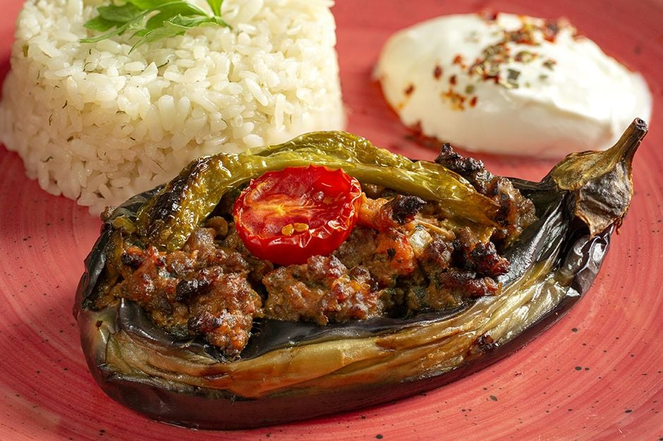

Ducane loves cooking, in this content ducane will teach to his favorite teacher Dawn Rauscher.
he thinks Dawn Rauscher is a very good teacher and she will love Karniyarik here is the Karniyarik Recipe
how to make Karniyarik
Ingredients
6 eggplants,
250 g ground beef,
1 onion,
2 green peppers,
1 tomato,
1 tablespoon tomato paste,
1 teaspoon paprika,
1 clove of garlic,
Salt,
Black pepper,
Cumin,
Vegetable oil to fry the eggplants,
Sauce: 1 tablespoon tomato paste, 1 teaspoon paprika and 1.5 cups water,
Tomato and pepper slices to top it.
Preparation
Take the stem ends off the eggplants and peel strips off with a vegetable peeler or a knife in a zebra pattern (this will help them hold their shapes better),
Soak them in salty water for 20 mins (to get rid of the bitterness) and tap them dry with paper towel,
Heat the vegetable oil in a frying pan with high sides and fry the whole eggplants on all sides,
Sauté the finely chopped onion, pepper and grated garlic in vegetable oil in a separate skillet,
Add in the ground beef and cook until it turns light brown,
Stir in the tomato paste, paprika, black pepper, salt and cumin,
Add in the tomato cut into small cubes and cook for 3-4 mins,
Place the fried eggplants on a baking dish,
Make indents in the center to create space for the filling,
Distribute the filling equally among the eggplants,
Place tomato and pepper slices on top,
Stir together the sauce ingredients and pour over the filled eggplants,
Bake at 190 degrees celsius until the tomato and pepper slices start turning brown.
